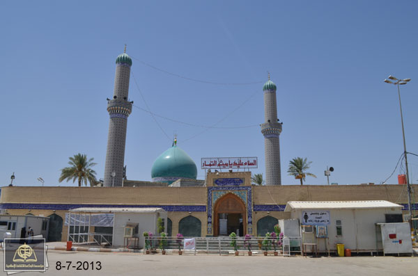

<!DOCTYPE html>
<html>
<head> 
<title>ميثم التمار</title>
<meta charset="UTF-8">
<head>


        <style>

            * {
         box-sizing: border-box;
     }
     .header {
         padding: 1em;
         margin: 10px;
         text-align: center;
         background: black;
         color: white;
     }
     .footer {
         padding: 20px;
         text-align: center;
         background: black;
         color: white;
         margin: 10px;
     }
 

     </head>
<body style="align-content: center " >
        <div>
                <ul id="nav"> <li><a href="malam.html">Home</a></li> 
                
                    <li><a href="oldctiy.html"> مرقد انبياء الله هود وصالح </a></li> 
                    <li><a href="oldctiy.html">العتبة العلوية المقدسة</a></li> 
                    <li><a href="oldctiy.html">مقام الامام زين العابدين</a></li> 
                    <li><a href="oldctiy.html">مرقد الصحابي صافي الصفا</a></li> 
                    <li><a href="kufa.html">  مسجد الكوفة المعظم</a></li> 
                    <li><a href="sahla.html">  مسجد السهلة المعظم </a></li> 
                    <li><a href="alhanan.html"> مسجد الحنانة </a></li> 
                    <li><a href="kmal.html"> مرقد الصحابي الجليل كميل ابن زياد </a></li> 
                    <li><a href="matham.html">  مرقد الصحابي الجليل ميثم التمار</a></li> 
                    <li><a href="yuns.html">  مقام النبي يونس </a></li>             
            
                
               
                </ul>
        
                </div>


    <div  class="header">
    <h1 align="center">
      "مرقد الصحابي الجليل ميثم ابن يحيى التمار"
    </h1>
</div>

 

<body style="align-content: center " >
        <div align="center" style="color:whitesmoke; background:olivedrab" >

 

            <div >
                    <figure>
                            <figcaption>
                                 
                    
     

                    
                    
                   
                </figcaption>
            </figure>
            </div>
          
            <div>
                <h2>
                        أبو سالم ميثم بن يحيى مولى بني أسد، كوفي يبيع التمر فاشتهر بالتمّار، صحابي جليل القدر من حواري أمير المؤمنين علي بن أبي طالب (عليه السلام)، استشهد في الكوفة قبل مقدم الإمام الحسين (عليه السلام)إلى العراق بعشرة أيام مصلوباً من قبل والي يزيد بن معاوية على الكوفة عبيد الله بن زياد، كان عالماً بالمغيّبات، حُبس مع المختار الثقفي بعد استشهاد مسلم بن عقيل (عليه السلام) بيومين وقيل ثلاثة، ثم صُلب على خشبة عند باب عمرو بن حريث فجعل يحدّث الناس بفضائل أمير المؤمنين علي (عليه السلام)رافضاً البراءة منه، فألجموه فكان أول من ألجم في الإسلام وفي اليوم الثالث من صلبه طُعن بحربة فكبّر واستشهد آخر النهار رضوان الله عليه.

                        يقع مرقده غربي مسجد الكوفة على مسافة (500) متر منه، على الشارع العام (نجف ــ كوفة) على يمين القادم من النجف، نُصبت عليه قّبة شامخة متوسطة الحجم والارتفاع غُلّفت بالقاشان الأزرق وسط صحن واسع تصل مساحته إلى (5.300) متراً مربعاً يضم عدداً من الحجرات والأواوين وأروقة متعددة.
                </h2>
            </div>
        </div></body>
             <footer style="align-content: center; "  class="footer">
       
                    <h2 align="center"> وللاطلاع اكثر عن المرقد  التفضل بزيارةالرابط اسفل
                        </h2>   </p>
                     <a href="https://youtu.be/UbR_HShX2QU" > <h3 align="center">معلومات اكثر </a></h3>   
                    
               </footer> 
                </html>